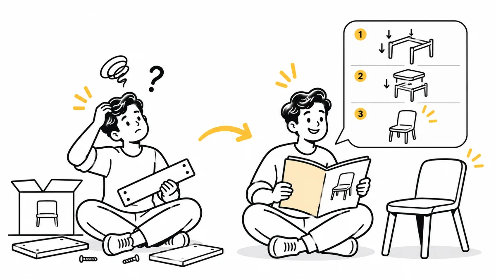

HeuristicsH10Series finaleHelp and Documentation
Great UX is being there when it's not easy
The best products are intuitive. But even the best designs confuse someone at some point. What makes a product user-centred isn't the absence of confusion. It's the presence of helpful, human support right when it's needed.

Welcome to the final week of my 10-part series on Nielsen’s Usability Heuristics.
Over the last nine weeks, we've explored everything from visibility of system status to error recovery. And now, we come to one of the most underrated but absolutely essential aspects of UX:
Heuristic #10: Help and Documentation
Ideally, a product should be self-explanatory and intuitive. But the reality is that users will still need help sometimes.
And when they do, your design should offer support without overwhelming or confusing them further.
Real-Life Analogy: The Furniture Assembly Manual
Let's be honest. Most of us have a love-hate relationship with flatpack furniture.
You buy a wardrobe, carry it home in a flatpack box, and what's the first thing you do?
Try building it without looking at the manual.
Then… 45 minutes and a few wooden dowels later, you finally reach for the manual.
Here's the thing: the best manuals don't just list instructions. They guide you through the process.
They:
- Use clear visuals to show exactly where each part goes.
- Avoid long paragraphs of confusing text.
- Highlight what not to do, often using warning icons.
- Offer troubleshooting tips to help when something goes wrong.
Now, imagine the furniture store giving you just the parts and saying, "Figure it out."
That's exactly how using a product without helpful documentation can feel.
Digital Product Example: Help When You Need It
Good digital products don't simply throw a 50-page PDF at you and expect you to figure everything out.
Instead, they provide help right where it matters.
Great UX help can look like this:
- A small ❓ icon next to a confusing form field.
- Step-by-step onboarding overlays when someone uses a product for the first time.
- Tooltips on hover for actions that aren't immediately obvious.
- A clear Help or Support option in the menu that's easy to find.
- Searchable FAQs that actually answer users' questions.
Help shouldn't be a last resort. It should feel like a natural part of the experience.
It's Not About "RTFM" Anymore
Old-school software often had one response:
"Read the manual first."
Modern UX takes a different approach:
"Let us guide you as you go, and support you whenever you get stuck."
Just like a good teacher doesn't wait until the end to help students, a good product supports users throughout their journey.
Key Takeaways
- Make help easy to find. No one should have to dig for it.
- Embed help within the experience using tooltips, inline hints, and helpful icons.
- Use visuals, examples, and simple language in your documentation.
- Offer searchable, user-friendly FAQs and support articles.
- Don't make users feel bad for needing help. Support them with empathy.
Concluding Thought
Even the most intuitive designs can confuse someone at some point.
What makes a product truly user-centred is not the absence of confusion, but the presence of helpful, human support right when it's needed.
Great UX is not just about making things easy.
It's about being there when they're not.